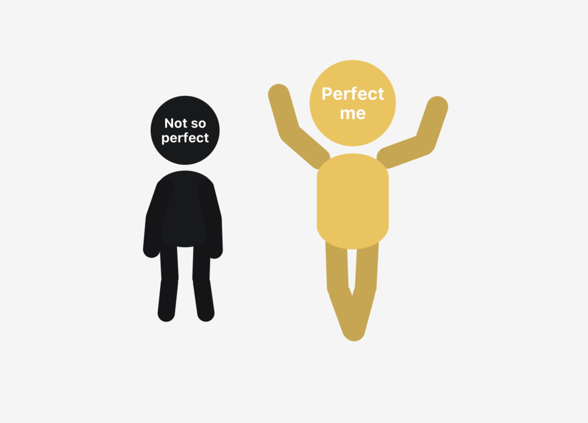
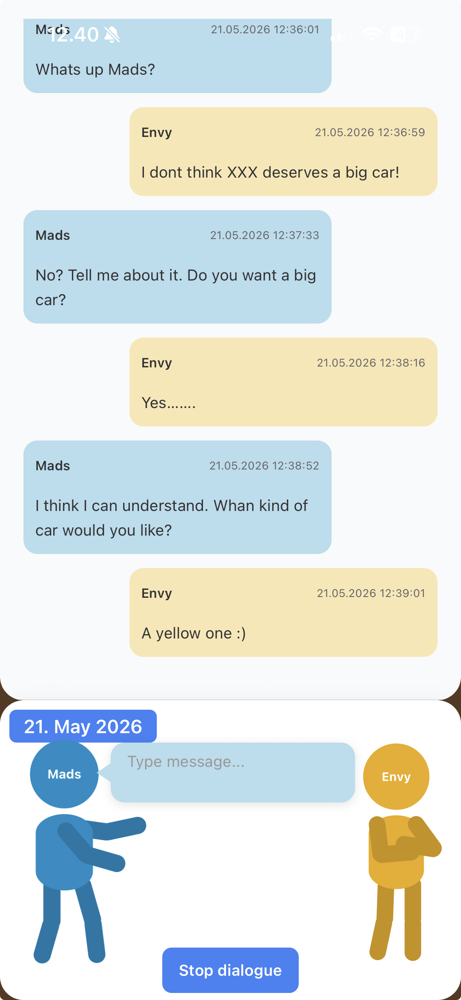
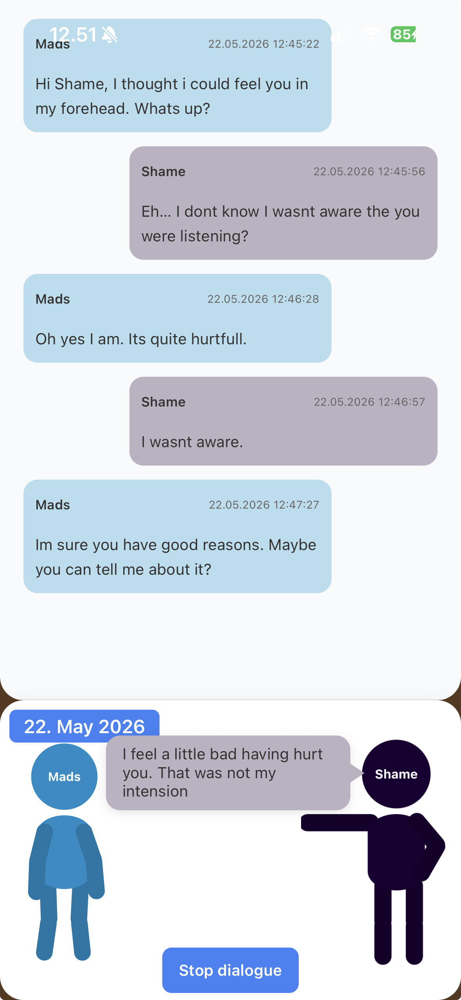
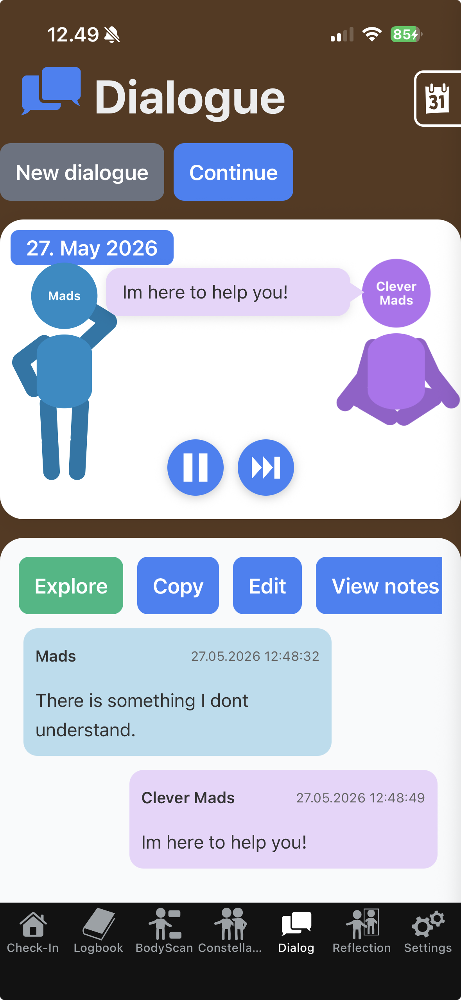

Dialogue with shame.
2026 06 may
Dialogue
I published the App on the 27th of April. After having worked on it for a long time, I was super excited. I waited for a whole day and looked. Nothing really happened not a single download. I expected a lot of people would just find the app, download it, and be happy. It didn't happen. No downloads for the first 2 days. I felt a little sad, and an old familiar voice came visiting.
I sat down with my app and started the dialogue you can see below. Afterward, I felt better.
I didn't write it to show you how you can use it. But after feeling the relief myself, I thought it might be a perfect (imperfect) example of how you could use the app.

Mads: Hey Shame, I could feel you pressing on my forehead and making my face go cold. What do you want to say?
Shame protector: Are you actually listening to me? I didn't know that.
Mads: Yes, I want to try something new.
Shame protector: Oh well, don't go thinking you're something special!
Mads: Well, I actually think I am. Why don't you think I should?
Shame protector: Uh, because then you'll just get hurt and there'll be no one to comfort you.
Mads: So you want to hurt me so I don't get hurt by others, and instead of comforting me, you shame me?
Shame protector: Uh, yes.
Mads: That doesn't quite sound like it serves my best interests.
Shame protector: No, when you put it that way.
Mads: Yeah, I'm not saying this to shame you, but it doesn't feel very loving?
Shame protector: No, you're right, it's actually quite strange.
Mads: Yes. I'm sure you do it for a good reason, but it feels very unloving — and you don't seem very proud of it either?
Shame protector: No, I'm actually feeling a little embarrassed.
Mads: I don't think you need to. Let's focus on your good intention.
Shame protector: Thank you, Mads.
Mads: What else is there?
Shame protector: Anyone can make an app.
Mads: Yes, plenty of people probably can. But not my app — with the brown background and the stick figure with the kind comments. And I have a lot in common with other people. That's actually wonderful. I think many people believe they can, but not that many actually do it. Anyone can't make my app. Only I can. What else?
Shame protector: There are no users.
Mads: No, I'm a little sad about that too, but it'll probably take some time. Maybe I'll have to ask for help.
Shame protector: Loser! Only losers ask for help.
Mads: Okay, that must make you quite lonely, thinking like that. I feel like I'm helping you by listening to your self-punishing rules. You might not be directly asking for help, but there's something unhappy about you that invites it. Do you find it disgusting to receive help?
Shame protector: Uh, no — actually quite nice. I do feel a little embarrassed though, seeing how I talk to you.
Mads: You know what? That's okay. I think you've been hard on yourself because you were afraid you couldn't handle more humiliating rejections and being ignored.
Shame protector: Yes.
Mads: I think you've done well. You're a tough one. A survivor!
Shame protector: Thank you for seeing my strengths. I'm actually moved — and a little sad.
Mads: That's okay. I know the feeling. I know how you feel.
Shame protector: Do you?
Mads: Yes, you're a part of me. And you've taken up a lot of space.
Shame protector: Yes. Can you forgive me?
Mads: Yes, I can. You've carried us in a strange way.
Shame protector: Yes.
Mads: You are a part of me.
Shame protector: Am I?
Mads: Yes, and you've done well. But now we can do something different. I can see your pain. You can see how your harshness hurts others. I can listen to you and understand you.
Shame protector: I'm not a bad person.
Mads: I know that, and you shouldn't think that about yourself. We found the ways that worked. And you didn't choose this alone. You're welcome to be here and say what you want.
Shame protector: I don't think I want to say harsh things anymore.
Mads: That would be wonderful. If you do slip into it, that's okay — we'll look at it together. You are not a bad person.
Shame protector: Thank you, Mads.
Mads: You're welcome, Shame. :)
Shame protector: We'll talk again — yes, we will.
Mads: Be kind to yourself.
Shame protector: Thank you, and you too.
Mads: I will. ❤️
It will probably take some time for people to find this App.
Maybe this can inspire you. Who will you have a dialogue with?
Cheers Mads
Start Journaling. Your journal is your new best friend!
2026 03 may
Journaling
If you are starting out journaling, or considering to start journaling this might be a good place to start on the right foot.
-What is it to journal?
I thought a bit about it and came up with a good metaphor. Your journal is like a friend. It's your chance to become your own friend.
When you write, be open and brave. Come as you are. It's not important if you say something silly or something rude. What counts and deepens your relationship is that you are honest — also about the less beautiful things. Don't hold back, spill your guts. Dare to be ugly and honest. Dare to open your heart.

When you read, don't judge. Be a listening, curious friend. You know you don't need to say something to be a friend. Be gentle and warm.
It's a bit strange, but most often we don't treat ourselves as we would treat a friend. We judge ourselves harder, we don't stand up for ourselves. A friend knows you are a good person even if you say something stupid, even if you don't have smart words, even if you are not cool, even if you are not kind.
Start slowly to gain trust. Treat yourself kindly.
Journaling is a way of starting to become your own best friend.
Good luck with your writing, and your new friendship!
What should I write about in my Journal?
2026 04 may
Journaling
Well, now that we have established the metaphor, we can put it to use.
How would you approach your friend?
If you were to tell somebody all about yourself — share your less nice sides, your feelings, thoughts, sorrows, and dreams — how would you like to be approached by your friend?
Maybe you can ask yourself what's on your mind. Be curious, be kind, be direct, but always respectful.
You can actually start your diary by asking yourself how you feel, and if there is something you would like to share or unburden.

Maybe to get started, your first line could be something like:
"I wonder what is on my mind and how I feel. Maybe I haven't been a good friend to myself and haven't been too good at checking in. But this is my invitation. I'm ready to listen now :)"
But that's just a suggestion. You know how you like to be approached.
And if you don't...
-Start asking and being curious!
It sounds a little crazy, but give it a try.
Maybe life is a little crazy?
You can also approach this a little less crazily. Write about how your day was. Who you met, how it made you feel. What would you have liked to have done differently? Did you do something nice for yourself? For somebody else? What are your dreams? What would you like to happen? What made you happy? What made you sad?
It's actually the same. When you write, you are the sharing friend. When you read what you have just written — and you can't help but do that — you are the listening friend.
Link: Journal metaphor
Journal metaphor
Do I need to write every day?
2026 05 may
Journaling
The short answer is no. But it might be the wrong question. Stay with me and let's have a look.
Let's visit the friend metaphor again.
What is your journal like? Does it feel like you are inspired when you sit down and start to write? Is it easy for you to share your thoughts and feelings? If so, you are probably doing just fine — there seems to be trust and confidence built.
If it's not easy, well, then you probably need to work on that relationship and earn that trust.
If we stay with the relationship metaphor, you can't do this half-heartedly. That would be cruel to yourself. You need to convince yourself that you are there. That you are listening. That you can be trusted to show up over time. That you are patient with yourself.
Once you do that, you will start to trust yourself. Ideas will flow. You will recognize that you are listening, and respond with openness.

Have you been good at taking care of yourself? Are you good at checking in with how you feel, what you like, and what your dreams are?
If not, you may have some work to do. You might need to prove your worth before your writing starts to flow. Maybe you need to show up every day at a set time — to show yourself the respect you have been missing.
And importantly — you don't need to do anything. See if somewhere there is a want. You want to listen to yourself. You want to be heard. You want to be a good listener to your own mind.

It's a little weird, but there might be some resistance in you — to write and to listen.
I believe it goes like this:
we know that we have been neglecting ourselves by not listening, and we know that some part of us is sad that we don't. Don't blame yourself. We are often taught to ignore our feelings, and if there is no way they can be met, it can be a good protection to ignore them for a while.
So we fear that we are sad or angry at ourselves for not listening — and that is why we don't want to listen in.
But if you choose to do so, I promise you that you will be happy and that you will forgive yourself fast. Don't expect that no grudges will be held — but rest assured that you are far more forgiving than you thought.
So, how often do you need to write?
You need to figure that out, and only you have the answer.
Is there anything I can do wrong?
2026 06 may
Journaling
Is there anything I can do wrong?
It's tempting to answer with a "No!"
Nothing can go wrong; if you make mistakes, you will learn from them. Everything is ok.
But I don't think that's quite true. There are some traps.
Let's stay with the friend metaphor from "Start journaling — Your journal is your new best friend."
Maybe you have a friend who is very nice, kind, and understanding. They listen to you without judging, but when they tell you something about themselves, it's always a success. They bought the right stock, they love their work, they never get angry, they made a good bargain, they dress well, they look nice, they are kind.
It's perfect. But still, you feel miserable when you leave. They haven't said anything hurtful — so why is that?
..Or maybe you have a friend who admits that they are envious, or that they cheated on an assignment, or they don't always dress up, or they fart. And you love them because you can relax in their company. You are not alone. There is another human full of errors — and they are so easy to love.

Imperfect people who share their imperfections are just so much more relaxing to be around.
It's not that perfect people are bad, or that it's good in itself to have a lot of flaws. (Or maybe it actually is?)
My point is: if you strive to make your journal perfect, you are risking the trust and confidence.
Your journal should not be perfect and beautiful and lovely. It's not that you shouldn't be happy, or that I want you to focus on the bad. But you need to be open to all aspects of yourself — both the good and the bad.
And often the "good" things get plenty of attention already.
Some people buy a perfect book for their journal. Soft leather cover (vegan), quality paper, an expensive pen inherited from their grandmother's grandfather. Or they decorate it with flowers, write poetry, or fill it with perfect pictures of beautiful experiences.
It's not that you shouldn't write about your good experiences, achievements, and successes. But make sure you don't silence yourself by quietly communicating that this journal is only for nice stuff.
That's not a journal. That's a scrapbook. It can be lovely to acknowledge all the good things happening in your life — it's great to be grateful!
But it's hard to write ugly, sad, painful, stupid, and confused things in a perfect book.
Don't make your journal an Instagram moment or a Facebook post.
Remember how nice it is to be around that honest friend who can admit that not all is perfect.
Be that imperfectly perfect friend!
Should my journal be private?
2026 21 may
Journaling
Yes!
Can you share parts of it?
Yes, maybe....
We have established the idea that your journal is your best friend. If you haven't read the first post, go check it out. Journaling for self-development is about befriending new sides of yourself, and listening to them with care and curiosity rather than judgment.
When we succeed in building enough trust in ourselves as listeners, we start to open up. And what comes forward might be feelings we are not particularly proud of. Like envying a friend's success, or finding their partner boring.
The great thing is that once we admit those things to ourselves and look at them with kind eyes, they tend to disappear. As long as we don't, they keep working in the background.
Why is that? I think it's because they carry an important message underneath. It's really not that I don't want my friend to succeed. It's because I also want to succeed. And once I listen to that hidden message, I can fully understand that part of myself — and start to talk to it and take care of it.
Oddly, if you don't listen to it, you spend so much energy pushing it back that it can stop you from talking or saying meaningful things.

So it's really important that that voice can feel safe coming forward. As soon as I start blaming or shaming it, I have blocked my access to the underlying message.
Which brings us back to sharing.
Your journal is not for publishing. It's for befriending yourself. The parts that were almost too shameful to admit — once they feel welcomed, they tend to disappear or lose some of their energy. They really just needed to be acknowledged.
That process can take time. And as long as you are still in it, be very careful about exposing those parts to the risk of being judged. If you do, you might end up letting yourself down.
Once you can own them and they feel secure, then you can consider sharing. That can be a very good thing. But make sure you pick people you trust, and that you feel ready.
But what if I want to write publicly?
I think that's a great project. I just suggest you have two journals. One that is public, where you share things you feel confident about — things that won't hurt too much even if people don't like what you say. And a private one, where you practice listening to yourself and your more vulnerable feelings.
Take good care of your best friend. You both deserve it.
Dialogue can be part of journaling
2026 22 may
Dialogue
Journaling
A less spoken of part of journaling is dialoguing.
You might have heard of it or tried it yourself. NLP, Gestalt therapy, and many others have used it. At its core, you play yourself and another person and switch roles. And by doing so, surprising things start to happen.
You understand the other part better, you can have them talk nicely to you, you can recognise the patterns in your interaction — and you are less caught up because you are in control. You might even forgive yourself or the other person. The work you do actually changes you.

Maybe you think that's too weird. It might feel a little strange , - actually quite a bit strange.
But if you notice what happens in your life, you might be surprised to admit that you already do something like it. You have conversations with yourself where you play out what you should have said, or prepare what to say if this or that comes up.
Dialogue is also part of how coaching and any good conversation works. So dialoguing in your journal is not that different. And when you practice, you can become a really good partner in your own conversations. Do experiments. What happens if you are softer? What if you are harder? How about being silent? Be curious.
You can see dialoguing as an expansion of your journaling. You don't need two chairs and a therapist — although that's really nice. You can start small. Write it on a piece of paper, in a document on your computer, or on your phone.
If it ends up in an argument, or you end up being hard on yourself or the other person, take a break and let things settle down. Remember to be kind to yourself in both roles.
I use it a lot. I have dialogues with my deceased dad. Sometimes to tell him I miss him, sometimes because I'm mad at him. Sometimes for advice, sometimes to share things I didn't get to say when he was alive.
I also have dialogues with some of my negative inner voices. You can check out my Dialogue with Shame as an example.
It serves the same purpose as writing a journal — befriending yourself. Sometimes it's parts we don't yet want to recognise as part of ourselves. Like shame.
But once you do, magical things start to happen. Once you identify just a little with shame, you start to understand it differently. You start to realise that it's maybe there for a good reason. That's not to say it should keep up the work — but at some point in your life it might have been serving you, or even saving you from something worse.
And watch out — you might enjoy this a lot.
Link: Dialogue with shame
Dialogue with shame
Who should I have have a dialogue with?
2026 27 may
Dialogue
Journaling
That is a great question. There's no real limit to it, but let's have a look and maybe you can get inspired.
You can talk to anyone, really. As I mentioned, I talk to parts of myself and sometimes members of my family. But also characters from my dreams. You can also talk to people you admire or people you envy. You can talk to people you don't understand, and ask them questions, and often you might find that they have really good answers that you never thought of (even though you kind of did).
Maybe don't ask who you should dialogue with — maybe it's the other way round: who wants to dialogue with you?
Start to be curious, listen to what is happening around you, and see who comes to your mind. They might pop up in your dreams. They might be fictional characters that you find intriguing, perhaps because you admire them, or maybe because they disgust you.
Maybe you already have conversations in your mind. Like an argument where you didn't know what to say, but now you do — and if they say this, then you will say that, etc. Maybe you are already arguing with yourself? Should I stay home and relax, or should I go out and have some fun?
It can happen that you start with someone, but somebody else takes over. It could be that you blame yourself for not being able to find out who to talk to, or you stop yourself from dialoguing because that is stupid and embarrassing and you are not that kind of person.
In that case maybe you should talk to that voice instead and ask them kindly why they think they are not creative, maybe encourage them a little, ask them what could go wrong and what they are afraid of.

You can get inspiration from your regular life. You can get inspiration from your dreams. Talk to the monster, the strange lady, or the bird.
Here is some inspiration for you:
People you have a conflict with.
People you are having conversations with anyway — just now make them more structured.
People you admire.
People you despise.
People you miss. (A grandparent, an old friend, or yourself as a small kid.)
God. Make sure that it is respectful.
Fictional characters that you admire or envy. A wise woman, a strong character, a sensitive soul.
Your own parts. Your own parts could be guilty, envious, playful, and scornful sides — or your powerful side, kind, clever, and strong.
You can also use it to practice a conversation, such as a job interview, asking someone for a date, or bringing up a subject that feels difficult to talk about.
Though it can sound strange to dialogue with yourself, you are in good company. There are a lot of different therapies and ways of thinking that use similar techniques - Gestalt, NLP, Coaching, Narrative-based therapies, Inner Family Systems (IFS).
The basic premise is that we contain more than we are aware of and that we can access it. It is a dynamic relationship. Getting in contact with these sides of yourself changes you. By playing their roles, you become more flexible, you get access to more of your resources, and maybe some of your inner and outer conflicts start to loosen up.
It can be surprisingly rich and strange, and you will find out you know stuff that you didn't think you knew anything about.
How to dialogue with someone
2026 29 may
This is a great chance to talk to people you normally can't talk to.
Be curious. Try not to judge. Keep asking.
If the conversation runs sour or they start to blame you or scold you, maybe ask them why, what their good intensions are, sometimes maybe take a break and say that you will come back and try once they have calmed down or learned to speak in a respectful way to you.
Watch how they react to you, but also notice how you react to them. Are you perhaps talking in a hurtful way to them? (im not blaming you. That could be the right starting point, but it might make them shut up, or play the victim and then you won't be able to talk to them).
Set some boundaries and behave respectful your self. Make your intentions clear. Id like to talk to you because im curious about this or that.
If you find out that you or the other side si talking hard and hurtful to each other, maybe let it happen but then get back and have a look at it later and see if you can look at it with kinder eyes, not thet you allowed your self to let out some steam.
What if noting happens?
Well maybe you need to earn their openness. Maybe you need to come back and try more times. let them answer with "......" if they don't have anything to say. Register how that feels, tell them what you feel. Tell them that you hope that they are willing to talk to you, and that you are patient, or even that you respect their feelings.
When you talk for the other person maybe give them a voice in your head a special tone. Try not to thing what they will say, but let it come more natural to you. Dont think too much, it's not like you can do anything wrong really. There are no rules as such and it does not need to be pretty or clever.
Be brave and playfull and respectful.
Remember that they are also parts of your self, so watch out for getting revenge or scolding them. That will probally hurt your self. Im not saying that you cant let out some steam, but watch carefully what happens. If you do hurt them, don't be afraid of saying you are sorry.
Also you will get better over time. So give your self a break if it feels a little uncomfortable the first times you do this.
I have found it to be very funny and enlightening, and touching, and that I get some really good advice form time to time.
It's like a way of getting out of your own mindset and into others, and it's strangely easy sometimes to be both a kind soul and a real asshole.